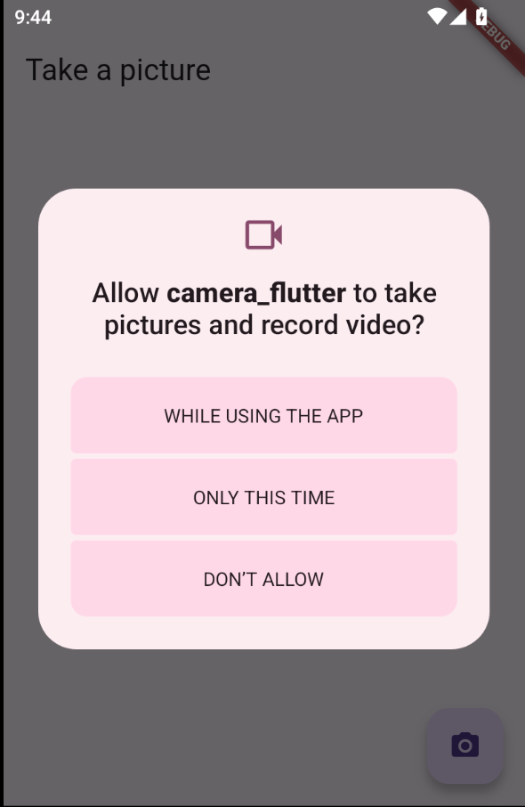
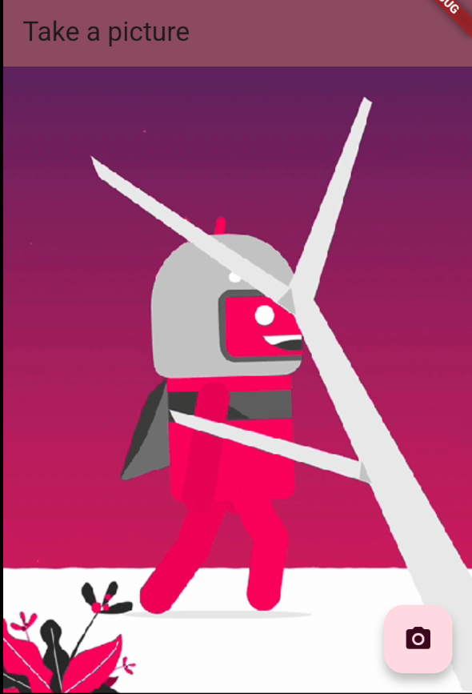
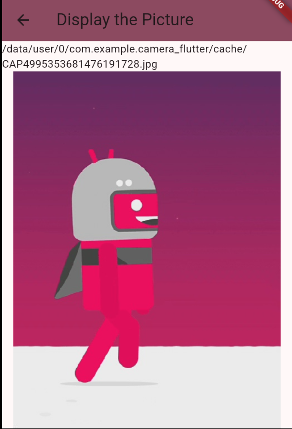

Unit 5.5. Camera with Flutter
Overview
Flutter provides access to the device camera through plugins available on pub.dev. These plugins allow you to capture photos and videos, as well as access camera streams.
This section demonstrates how to use the camera plugin to display a preview, take a photo, and display it using the following steps:
- Add the required dependencies.
- Get a list of the available cameras.
- Create and initialize the CameraController.
- Use a CameraPreview to display the camera's feed.
- Take a picture with the CameraController.
- Display the picture with an Image widget.
We are going to use the package camera, which provides a simple way to access the camera in Flutter applications. This package allows you to:
- Display a live camera preview.
- Capture photos and videos.
- Control camera settings such as flash, zoom, and focus.
- Access multiple cameras (front and back).
Adding dependencies
Add the camera package to your pubspec.yaml file:
Additionally, you may want to include the path_provider and path packages to help with saving captured images:
| flutter pub add path_provider
flutter pub add path
|
path_provider helps you find the correct paths to store files on the device, while path provides utilities for manipulating file paths.
For android, You must update minSdkVersion to 21 (or higher).
| android {
...
defaultConfig {
...
minSdkVersion 21
...
}
...
}
|
On iOS, the following lines must be added inside ios/Runner/Info.plist to the access the camera and microphone.
| <key>NSCameraUsageDescription</key>
<string>Explanation on why the camera access is needed.</string>
<key>NSMicrophoneUsageDescription</key>
<string>Explanation on why the microphone access is needed.</string>
|
Project structure
The project will have the following structure:
main.dart: Entry point of the application.my_app.dart: Contains the MyApp class that sets up the MaterialApp and loads the a Future to get the available cameras.take_picture_screen.dart: Screen to take a picture using the camera.display_picture_screen.dart: Screen to display the captured picture.
The main.dart file will look like this:
| // main.dart
import 'package:camera/camera.dart';
import 'package:flutter/material.dart';
import 'my_app.dart';
void main() {
final Future<List<CameraDescription>> camerasFuture = availableCameras(); // Fetch the available cameras before running the app
runApp(MyApp(camerasFuture: camerasFuture)); // Pass the Future<List<CameraDescription>> to MyApp
}
|
As the available cameras are fetched asynchronously, we pass a Future<List<CameraDescription>> to the MyApp class.
Getting available cameras
In the my_app.dart file, we will set up the MaterialApp and load the available cameras using a FutureBuilder.
The fisrt thing is to create a stateful widget that takes a Future<List<CameraDescription>> as a parameter:
1
2
3
4
5
6
7
8
9
10
11
12
13 | // my_app.dart
import 'package:camera/camera.dart';
import 'package:camera_flutter/take_picture_screen.dart';
import 'package:flutter/material.dart';
class MyApp extends StatefulWidget {
final Future<List<CameraDescription>> camerasFuture; // Declare a Future<List<CameraDescription>> to hold the available cameras
const MyApp({super.key, required this.camerasFuture}); // Accept a Future<List<CameraDescription>> in the constructor
@override
State<MyApp> createState() => _MyAppState();
}
|
Then, in the state class, we will use a FutureBuilder to wait for the cameras to be available before building the MaterialApp. The line future: widget.camerasFuture returns a snapshot that contains the state of the Future. It can be in one of the following states: ConnectionState.waiting, ConnectionState.done, ConnectionState.active, or ConnectionState.none. Once we get the snapshot, we can check if it has errors (snapshot.hasError) or if it has data (snapshot.hasData) and if the data is empty or not (snapshot.data!.isEmpty).
The body content depends on the snapshot state of the Future. If the snapshot has data and it is not empty, we proceed get the first camera from the list and navigate to the TakePictureScreen, passing the camera as a parameter:
1
2
3
4
5
6
7
8
9
10
11
12
13
14
15
16
17
18
19
20
21
22
23
24
25
26
27
28
29
30
31
32
33
34
35
36 | // my_app.dart
class _MyAppState extends State<MyApp> {
@override
Widget build(BuildContext context) {
return MaterialApp(
title: 'Material App',
theme: ThemeData( colorScheme: ColorScheme.fromSeed(seedColor: Colors.black)),
home: FutureBuilder<List<CameraDescription>>( // Fetch the available cameras using the FutureBuilder
future: widget.camerasFuture, // Use the passed Future<List<CameraDescription>>
builder: (context, snapshot) { // Build the UI based on the snapshot state. Snapshot is an AsyncSnapshot<List<CameraDescription>> that contains the state of the Future
// If the Future is still loading, show a loading indicator
if (snapshot.connectionState == ConnectionState.waiting) {
return const Scaffold(
body: Center(child: CircularProgressIndicator()),
);
// If the Future has completed with an error, show the error message
} else if (snapshot.hasError) {
return Scaffold(
body: Center(child: Text('Error: ${snapshot.error}')),
);
// If the Future has completed successfully and has data, show the TakePictureScreen with the first available camera
} else if (snapshot.hasData && snapshot.data!.isNotEmpty) {
final firstCamera = snapshot.data!.first;
return TakePictureScreen(camera: firstCamera);
// If the Future has completed successfully but has no data, show a message indicating no cameras were found
} else {
return const Scaffold(
body: Center(child: Text('No cameras found')),
);
}
},
),
);
}
}
|
Taking pictures
Once we have a camera, we need to create a CameraController to control the camera and display a preview. We will create a new screen called TakePictureScreen that takes a CameraDescription as a parameter. This widget must be a stateful widget because we need to initialize and dispose the CameraController asynchronously.
In the stateful widget class, we get the camer from the MyApp widget:
1
2
3
4
5
6
7
8
9
10
11
12
13
14
15
16 | // take_picture_screen.dart
import 'package:camera/camera.dart';
import 'package:flutter/foundation.dart';
import 'package:flutter/material.dart';
import 'display_picture_screen.dart';
// A screen that allows users to take a picture using a given camera.
class TakePictureScreen extends StatefulWidget {
const TakePictureScreen({super.key, required this.camera});
final CameraDescription camera;
@override
TakePictureScreenState createState() => TakePictureScreenState();
}
|
Then, in the state class, we create a CameraController and initialize it in the initState method. We also need to dispose of the controller in the dispose method to free up resources when the widget is removed from the widget tree.
1
2
3
4
5
6
7
8
9
10
11
12
13
14
15
16
17
18
19
20
21
22
23
24
25
26
27
28
29
30
31 | // take_picture_screen.dart
class TakePictureScreenState extends State<TakePictureScreen> {
late CameraController _controller;
late Future<void> _initializeControllerFuture;
@override
void initState() {
super.initState();
// To display the current output from the Camera,
// create a CameraController.
_controller = CameraController(
// Get a specific camera from the list of available cameras.
widget.camera,
// Define the resolution to use.
ResolutionPreset.medium,
);
// Next, initialize the controller. This returns a Future.
_initializeControllerFuture = _controller.initialize();
}
@override
void dispose() {
// Dispose of the controller when the widget is disposed.
_controller.dispose();
super.dispose();
}
...
}
|
The _initializeControllerFuture variable holds the Future returned by the initialize method, which we will use later to display a loading indicator while the camera is being initialized.
In the build method, we will use a FutureBuilder to wait for the camera to be initialized before displaying the CameraPreview. We will also add a FloatingActionButton to take a picture when pressed.
1
2
3
4
5
6
7
8
9
10
11
12
13
14
15
16
17
18
19
20
21
22
23
24
25
26
27
28
29
30
31
32
33
34
35
36
37
38
39
40
41
42
43
44
45
46
47
48
49
50
51
52
53
54
55
56
57 | // take_picture_screen.dart
@override
Widget build(BuildContext context) {
return Scaffold(
appBar: AppBar(
title: const Text('Take a picture'),
backgroundColor: Theme.of(context).colorScheme.primary,
),
// You must wait until the controller is initialized before displaying the
// camera preview. Use a FutureBuilder to display a loading spinner until the
// controller has finished initializing.
body: FutureBuilder<void>(
future: _initializeControllerFuture,
builder: (context, snapshot) {
if (snapshot.connectionState == ConnectionState.done) {
// If the Future is complete, display the preview.
return CameraPreview(_controller);
} else {
// Otherwise, display a loading indicator.
return const Center(child: CircularProgressIndicator());
}
},
),
floatingActionButton: FloatingActionButton(
// Provide an onPressed callback.
onPressed: () async {
// Take the Picture in a try / catch block. If anything goes wrong, catch the error.
try {
// Ensure that the camera is initialized.
await _initializeControllerFuture;
// Attempt to take a picture and get the file `image` where it was saved.
final image = await _controller.takePicture();
if (!context.mounted) return;
// If the picture was taken, display it on a new screen.
await Navigator.of(context).push(
MaterialPageRoute<void>(
builder: (context) => DisplayPictureScreen(
// Pass the automatically generated path to the DisplayPictureScreen widget.
imagePath: image.path,
),
),
);
} catch (e) {
// If an error occurs, log the error to the console.
if (kDebugMode) { // Only print in debug mode
print(e);
}
}
},
child: const Icon(Icons.camera_alt),
),
);
}
|
The line final image = await _controller.takePicture(); captures a picture and returns a XFile object that contains the path to the saved image. Then, we navigate to the DisplayPictureScreen, passing the image path as a parameter.
Displaying pictures
We will create a new screen called DisplayPictureScreen that takes the image path as a String parameter and displays the image using an Image widget. We also show a text with the image path.
This can be a stateless widget since we only need to display the image.
1
2
3
4
5
6
7
8
9
10
11
12
13
14
15
16
17
18
19
20
21
22
23
24
25
26
27
28 | import 'dart:io';
import 'package:flutter/material.dart';
// A widget that displays the picture taken by the user.
class DisplayPictureScreen extends StatelessWidget {
final String imagePath;
const DisplayPictureScreen({super.key, required this.imagePath});
@override
Widget build(BuildContext context) {
return Scaffold(
appBar: AppBar(
title: const Text('Display the Picture'),
backgroundColor: Theme.of(context).colorScheme.primary,
),
// The image is stored as a file on the device. Use the `Image.file`
// constructor with the given path to display the image.
body: Column(
children: [
Text(imagePath),
Expanded(child: Image.file(File(imagePath))),
],
),
);
}
}
|
Run the app. The first time it should ask you for camera permissions.

Once granted, you should see the camera preview.

Press the camera button to take a picture, and it will navigate to the display screen showing the captured image.

As you can see, the picture is sotred in a cache directory inside the app data folder. We will work later on how to save the picture in a more permanent location.
References